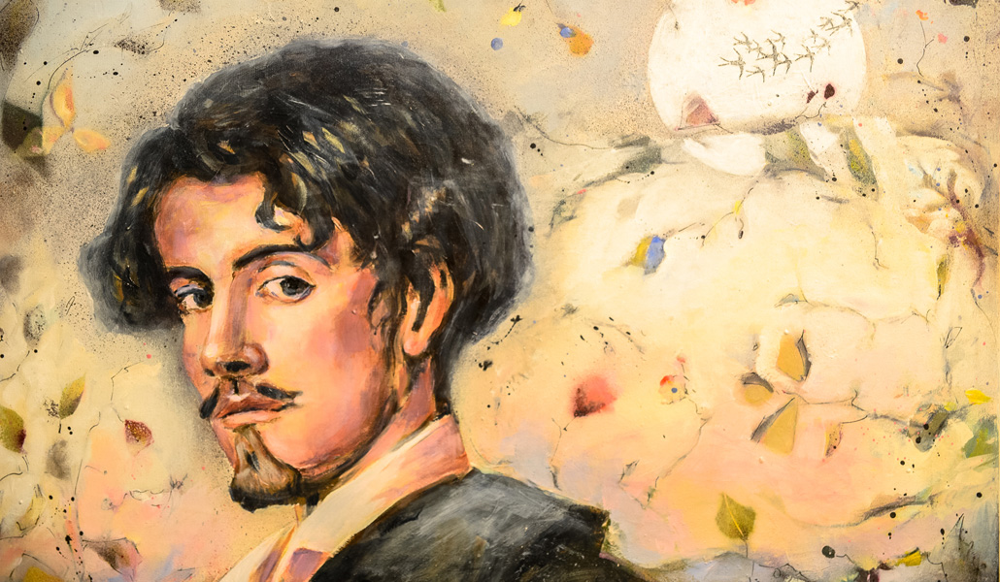
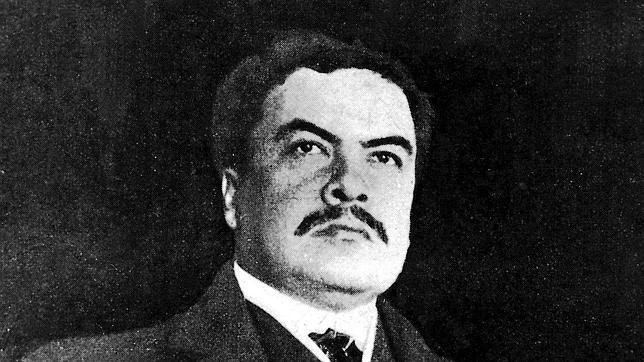

- Pablo Neruda
- La poesía
- Gustavo Adolfo Becquer
- Rima LIII
- Rubén Dario
- A Margarita Debayle
La poesía
Autor: Pablo Neruda
Para mí, tan solo para mí la tierra giraba, giraba entre las otras estrellas como en una caravana. Y me diste el amor, como un gesto de mar, de fuego, de azucena. Y entonces me sentí renacido, único, ileso. Y te di mi pobreza, mis manos, mis palabras. Y tú, desnuda, no tenías sino el mar y el cielo. Entonces comprendí, la poesía es el aliento del cielo.

Rima LIII (Volverán las oscuras golondrinas)
Autor: Gustavo Adolfo Bécquer
Volverán las oscuras golondrinas en tu balcón sus nidos a colgar, y, otra vez, con el ala a sus cristales jugando llamarán. Pero aquéllas que el vuelo refrenaban tu hermosura y mi dicha a contemplar, aquéllas que aprendieron nuestros nombres... esas... ¡no volverán! Volverán las tupidas madreselvas de tu jardín las tapias a escalar, y otra vez a la tarde, aún más hermosas, sus flores se abrirán. Pero aquéllas, cuajadas de rocío, cuyas gotas mirábamos temblar y caer, como lágrimas del día... esas... ¡no volverán!
A Margarita Debayle
Autor: Rubén Darío
Margarita, está linda la mar, y el viento lleva esencia sutil de azahar; yo siento en el alma una alondra cantar: tu acento. Una tarde la princesa vio una estrella aparecer; la princesa era traviesa y la quiso ir a coger. —Fui a cortar la estrella mía a la azul inmensidad.— Y el rey clama: —¿No te he dicho que el azul no hay que cortar? ¡Qué locura! ¡Qué capricho! El Señor se va a enojar.— Cuando entonces aparece sonriendo el buen Jesús. —Son mis flores de las niñas que al soñar piensan en mí.— Viste el rey ropas brillantes, y, aunque llora, hable así: —Poned flores a los santos, ¡y una estrella a mi jardín!
